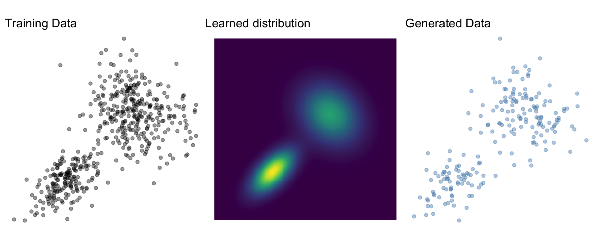
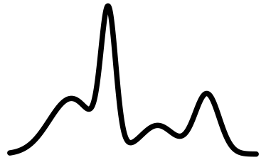
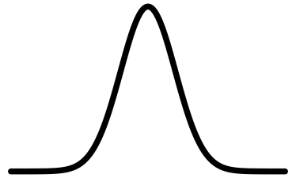
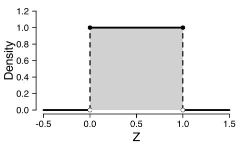
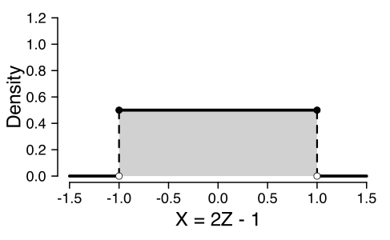
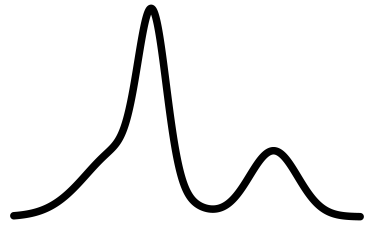
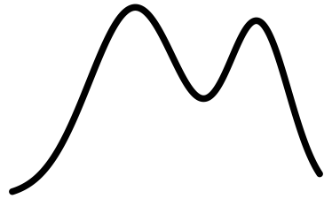
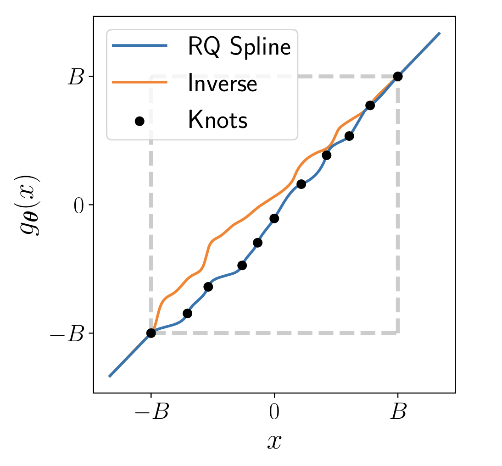
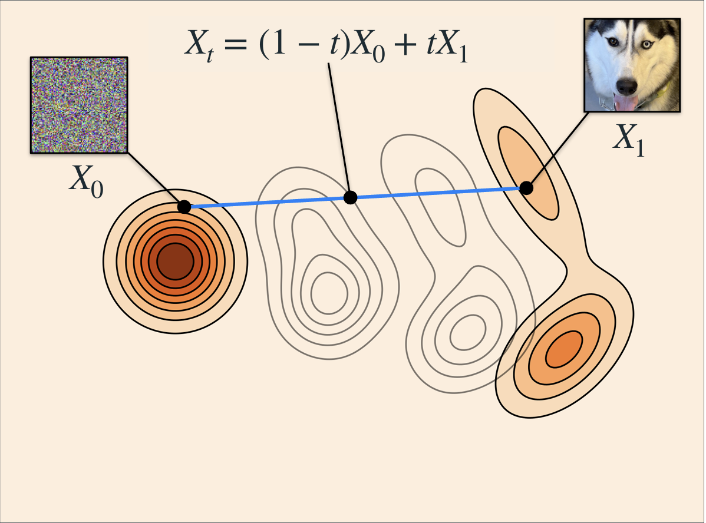

Generative Neural Networks
Generative models
Learn \(p_X\) given a set of training data \(x_i, \dots, x_n\)
- Sampling \(x \sim p_X\)
- Density evaluation \(p_X(x)\)
Mixture model
Weighted sum of multiple simpler distributions, e.g., Normal \[p_X(X) = \sum_k^K w_k \times \text{Normal}(X; \mu_k, \sigma_k)\]
- Sampling and evaluating straightforward
- Theoretically can represent any distribution
- Practically, does not scale well
Many architectures
- Markov random fields (Li, 2009)
- Generative adversarial networks (GAN, Goodfellow et al., 2014)
- Variational autoencoders (VAE, Kingma et al., 2013)
- Diffusion models (Song et al., 2020)
- Consistency models (Song et al., 2023)
- Normalizing flows (Kobyzev et al., 2020; Papamakarios et al., 2021)
- Flow matching (Lipman et al., 2022)
Common idea
Map \(p_X\) to a base distribution \(p_Z\) through some operation \(g\)
\[ x \sim g(z) \text{ where } z \sim p_Z \]

Normalizing flows
Normalizing flows
Built on invertible transformations of random variables
- Find \(f\) such that \(f(X) = Z \sim \text{Normal}(0, I)\)
- \(f\) normalizes \(X\)
\(f\)

\[\rightarrow\]

Sampling
- Sample \(z \sim p_Z\) (e.g., Normal)
- Obtain \(x = f^{-1}(z)\)
\(f^{-1}\)
\[\leftarrow\]
Density evaluation
Change of variables formula
\[ p_X(x) = p_Z(f(x)) \left| \det{J}_f(x) \right| \]
- Express \(p_X\) using \(p_Z\) and the transform \(f\)
- \(\left| \det{J}_f(x) \right|\): Absolute value of the determinant of the Jacobian matrix
- “Jacobian” for short
- Volume correction term
Change of variables - intuition
\[Z \sim \text{Uniform}(0, 1)\]
Change of variables - intuition
\[Z \sim \text{Uniform}(0, 1)\]

Change of variables - intuition
\[Z \sim \text{Uniform}(0, 1)\]
\[X = 2Z - 1\]
Change of variables - intuition
\[Z \sim \text{Uniform}(0, 1)\]
\[X = 2Z - 1\]

Change of variables - affine transform
\[f: Z = a X + b\]
- shift by \(b\): no effect
- scale by a constant \(a\): multiply by \(a\)
\[p_X(x) = p_Z(f(x)) \times a\]
Change of variables - affine transform
Example
\[ \scriptsize \begin{aligned} p_Z(z) & = \frac{1}{\sqrt{2\pi}} \exp\left(-\frac{1}{2} z^2 \right) \\[10pt] f: Z & = \frac{(X - \mu)}{\sigma} \\ \end{aligned} \]
\[ \scriptsize \begin{aligned} p_X(x) & = p_Z(f(x)) \times a \\[10pt] & = \frac{1}{\sqrt{2\pi}} \exp\left(-\frac{1}{2} f(x)^2 \right) \times a \\[10pt] & = \frac{1}{\sigma\sqrt{2\pi}} \exp\left(-\frac{1}{2} \left(\frac{x-\mu}{\sigma}\right)^2 \right) \end{aligned} \]
Change of variables - more formally
\[ p_X(x) = p_Z(f(x)) \left| \frac{d}{dx} f(x) \right| \]
Change of variables - more formally
\[ p_X(x) = p_Z(f(x)) \left| \frac{d}{dx} f(x) \right| \]
Example
\[ \scriptsize \begin{align} f: Z & = \log(X) \\[10pt] p_Z(z) & = \frac{1}{\sqrt{2\pi}} \exp\left(-\frac{1}{2} z^2 \right) \end{align} \]
\[ \scriptsize \begin{align} \frac{d}{dx} f(x) & = \frac{d}{dx} \log(x) = \frac{1}{x} \\[10pt] p_X(x) & = \frac{1}{x\sqrt{2\pi}} \exp\left(-\frac{1}{2} \log(x)^2\right) \end{align} \]
Change of variables - multivariate
\[ p_X(x) = p_Z(f(x)) \left| \det{J}_f(x) \right| \]
\[ J_f(x) = \begin{bmatrix} \frac{\partial z_1}{\partial x_1} & \dots & \frac{\partial z_1}{\partial x_K} \\ \vdots & \ddots & \vdots \\ \frac{\partial z_K}{\partial x_1} & \dots & \frac{\partial z_K}{\partial x_K} \end{bmatrix} \]
Change of variables - multivariate
\[f\left(\begin{bmatrix}x_1 \\ x_2\end{bmatrix}\right) = \begin{bmatrix} x_1^2 x_2 \\ 3x_1 + \sin x_2 \end{bmatrix} = \begin{bmatrix}z_1 \\ z_2\end{bmatrix}\]
\[J_f(x) = \begin{bmatrix} \frac{\partial z_1}{\partial x_1} & \frac{\partial z_1}{\partial x_2} \\ \frac{\partial z_2}{\partial x_1} & \frac{\partial z_2}{\partial x_2} \end{bmatrix} = \begin{bmatrix} 2x_1x_2 & x_1^2 \\ 3 & \cos x_2 \end{bmatrix} \]
Normalizing flow
\[ p_X(x) = p_Z(f(x)) \left| \det{J}_f(x) \right| \]
Define a \(f\) as a neural network with trainable weights \(\phi\)
Training
Maximum likelihood (or rather: negative log likelihood)
\[ \arg \min_\phi - \sum_{i=1}^n \log p_Z(f(x_i \mid \phi)) + \log \left| \det{J}_f(x_i \mid \phi) \right| \]
Flow \(f\)
Challenge
- Sampling: Invertible (\(f^{-1}\))
- Training:
- Differentiable
- Computationally efficient jacobian
- Expressive to represent non-trivial distributions
Flow composition
Invertible and differentiable functions are “closed” under composition
\[ f = f_L \circ f_{L-1} \circ \dots \circ f_1 \\ \]
\(f_1\)
\(f_2\)
\(f_3\)
\(\rightarrow\)

\(\rightarrow\)

\(\rightarrow\)
Flow composition - inverse
To invert a flow composition, we invert individual flows and run them in the opposite order
\[ f^{-1} = f_1^{-1} \circ f_2 ^{-1} \circ \dots \circ f_L^{-1} \\ \]
\(f_1^{-1}\)
\(f_2^{-1}\)
\(f_3^{-1}\)
\(\leftarrow\)
\(\leftarrow\)
\(\leftarrow\)
Flow composition - Jacobian
Chain rule \[ \left| \det{J}_f(x) \right| = \left| \det \prod_{l=1}^L J_{f_l}(x)\right| = \prod_{l=1}^L \left| \det{J}_{f_l}(x)\right| \]
if we have a Jacobian for each individual transformation, then we have a Jacobian for their composition \[ \arg \min_\phi \sum_{i=1}^n \log p_Z(f(x_i \mid \phi)) + \sum_{l=1}^L \log \left| \det{J}_{f_l}(x_i \mid \phi) \right| \]
Linear flow
\[ f(x) = Ax + b \]
inverse: \(f^{-1}(z) = A^{-1}(x - b)\)
Jacobian: \(\left| \det{J}_f(x) \right| = \left| \det{A} \right|\)
Limitations:
- Not expressive (composition of linear functions is a linear function)
- Jacobian/inverse may be in \(\mathcal{O}(p^3)\)
Coupling flows
- Increasing expresiveness while potentially decreasing computational costs
- A coupling flow is a way to construct non-linear flows
- Split the data in two disjoint subsets: \(x = (x_A, x_B)\)
- Compute parameters conditionally on one subset: \(\theta(x_A)\)
- Apply transformation to the other subset: \(z_B = f(x_B \mid \theta(x_A))\)
- Concatenate \(z = (x_A, z_B)\)
Coupling flow: Forward
Coupling flow: Inverse
Coupling flow trick
- Jacobian
\[ J_f = \begin{bmatrix} \text{I} & 0 \\ \frac{\partial}{\partial x_A}f(x_B \mid \theta(x_A)) & J_f(x_B \mid \theta(x_A)) \end{bmatrix} \]
- Determinant
\[ \det{J}_f = \det(\text{I}) \times \det{J}_f(x_B \mid \theta(x_A)) = \det{J}_f(x_B \mid \theta(x_A)) \]
Coupling flow trick
- \(f(x_B\mid\theta(x_A))\) needs to be differentiable and invertible
- easy to calculate determinant Jacobian…
- \(\theta(x_A)\) can be arbitrarily complex
- non-linear,
- non-invertible
- \(\rightarrow\) neural network
- Stack multiple coupling blocks and permute \(x_{A}\) and \(x_{B}\)
Affine coupling (Dinh et al., 2016)
\(\theta(x_A)\): Trainable coupling networks, e.g., MLP
- Output: Shift \(\mu\) and scale \(\sigma\)
Linear (affine) transform function \(f(x_B\mid\theta(x_A)) = \frac{x_B - \mu(x_A)}{\sigma(x_A)}\)
Jacobian: \(-\log{\sigma(x_A)}\)
Spline coupling (Müller et al., 2019)
- Transformation: Splines
- “Piecewise polynomials”
- More expressive
- Easier to overfit
- Slower at training and inference

Exercise - Moons
Build your own affine coupling normalizing flow!
Forward
Backward
Idea
- Normalizing flows transform X into Z in a set of discrete steps
- But why not take one smooth/continuous transformation?
Flow matching (Lipman et al., 2022)
Essentials from an extensive tutorial by Lipman et al. (2024) available at https://neurips.cc/virtual/2024/tutorial/99531.
Flow matching
- Defines a flow that transforms a distribution over time
- \(p_{t=0} = p_z\) - Base distribution
- \(p_{t=1} = q = p_x\) - Data distribution
Lipman et al. (2024)
Flow and velocity
- Flow defines \(X_t = \phi_t(X_0)\)
- Time dependent vector field: \(\frac{d}{dt} \phi_t(x) = u_t(\phi_t(x))\)
- Model \(u_t\) with a neural network
Lipman et al. (2024)
Flow matching
\[ \begin{aligned} \mathbb{E}_{t, X_t}|| u_{t,\theta}(X_t) - u_t(X_t) ||^2 \\ t\sim\text{Uniform}(0,1) \\ X_t \sim p_t(X_t) \end{aligned} \]

Lipman et al. (2024)
Conditional Flow Matching
Linear probability path
\[X_t = (1-t) X_0 + t X_1\]
Velocity
\[u_t(X_t \mid X_1, X_0) = X_1 - X_0\]
Lipman et al. (2024)
Conditional Flow Matching
\[
\begin{aligned}
\mathbb{E}_{t, X_t}|| u_{t,\theta}\big(\underbrace{(1-t) X_0 + t X_1)}_{X_t}\big) - (\underbrace{X_1-X_0}_{u_t}) ||^2 \\ t\sim\text{Uniform}(0,1) \\ X_0 \sim p_0 \\ X_1 \sim p_1
\end{aligned}
\]
Conditional vs Marginal paths


Optimal transport
- Independent coupling \(p(X_0, X_1) = p(X_0) p(X_1)\)
- Optimal transport coupling \(p(X_0, X_1) = \pi(X_0, X_1)\)
- Minimise transport cost (e.g., Wasserstein distance)
- For batches (Pooladian et al., 2023)

Figure 6: Fjelde et al. (2024)